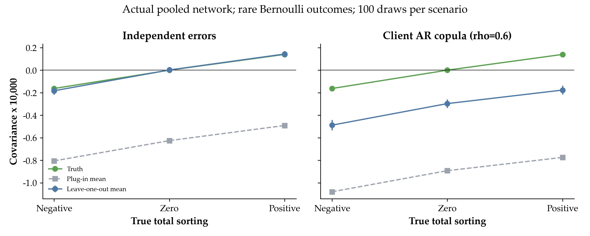
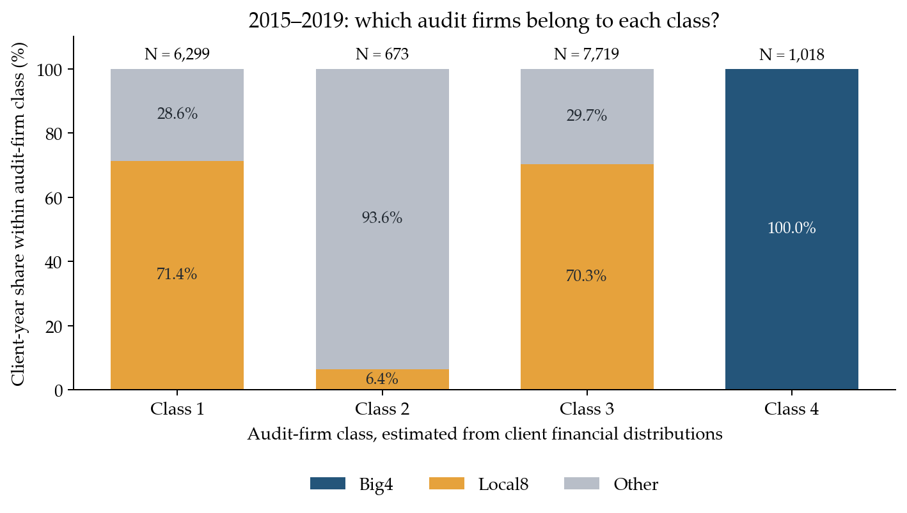
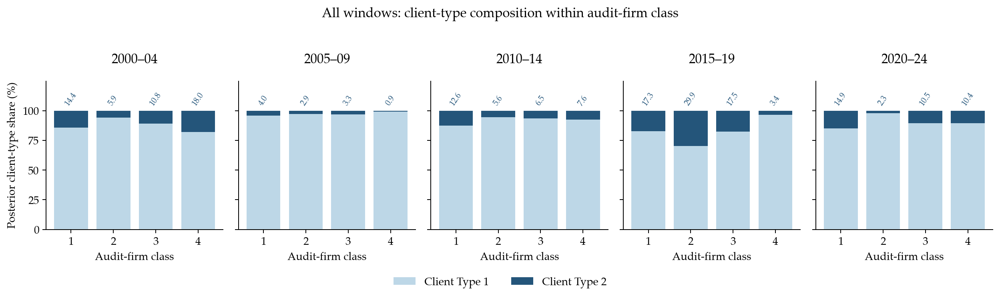

AKM：客户配置、估计噪声与风险择所
总体框架：客户、事务所与审计师
先保留三维AKM作为整体参照，将客户公司（firm）、审计事务所（audit firm）与签字审计师（auditor）的稳定成分放在同一模型中：
\[ Y_{it}=\alpha_i+\psi_{J_{it}}+\theta_{A_{it}} +\phi_t+X_{it}'\gamma+\varepsilon_{it}. \]
\(i\)是客户公司，\(J_{it}\)是事务所，\(A_{it}\)是稳定身份A1审计师。原有33资格三维基准中，未预警综合失败的客户、事务所和审计师插件方差份额分别为31.4%、2.9%、15.0%。这些是样本内估计成分的方差份额，不能据此比较三者的因果重要性。

双边与三维的其他对照
保留原来的另外两种双边模型与三维基准对照。它们用于说明三类稳定成分的分解，使用各自原规格与有效样本。


三套资格与四个结果变量的完整双边分解
以下使用原有不筛选、33、55结果，协方差与各成分方差分开报告。


下面先聚焦客户公司与审计事务所两方，研究客户构成、sorting和风险择所。 两方模型不再吸收审计师FE；它与上面的三维参照保留各自控制及有效样本，不把三维份额接入后面的两方纠偏。
聚焦客户—事务所：研究问题与主要结果
四大客户较低的失败率，对应怎样的客户构成与事务所成分？ 本节先用客户—事务所AKM描述稳定配置，再用一个参考BLM的最小联合模型，补充考察客户潜在类型与年度财务风险如何关联事务所配置。
目前得到三项结果。第一，AKM的失败指标呈现事务所梯队之间正向配置、梯队内部负向配置。第二，在公司年误差独立条件下，分项KSS明显减小组内负项，组间正项变化较小；客户内持续冲击仍会影响这一纠偏。第三，五年窗口联合模型中，2015—2019年四大所在类别的较高平均失败概率客户类型占比较低；上一年ROA较低还对应更多换所。客户类型的具体占比会随结果追踪窗的处理而改变。
下面的客户—事务所分析比较两套模型。它们的结果标签与异质性表示不同，数值不直接拼接比较。
| 对象 | 客户—事务所AKM | 五年窗口最小联合模型 |
|---|---|---|
| 主要问题 | 稳定客户成分与事务所成分如何配置 | 客户类型和年度财务状态如何关联配置与失败 |
| 客户差异 | 每个客户一个固定效应 | 窗口内固定的两类潜在客户 |
| 事务所差异 | 原始事务所ID固定效应 | 客户财务分布聚类得到的四类事务所 |
| 失败标签 | 回填被重述／违规的报告年度，再乘MAO=0 | 签字后三年内合格披露，且追踪窗成熟，再乘MAO=0 |
| 时间处理 | 在当前AKM估计样本内估计稳定成分 | 按日历五年分段，窗口内类型固定 |
| 估计方法 | 加性固定效应回归；二阶矩另作KSS | 二元结果、换所与目的地的有限混合最大似然 |
术语约定。 “事务所梯队”始终指四大、本土八大、Other；“事务所类别Class 1—4”指财务分布聚类；“客户类型Type 1—2”指联合模型推断的潜在类型。三者不混用。
1. AKM怎样容纳sorting？
Abowd 等 (1999) 的加性框架在本项目中写为
\[ Y_{it}=X_{it}'\beta+\alpha_i+\psi_{J_{it}}+\phi_t+\varepsilon_{it}. \tag{1}\]
\(i\)是上市公司客户，\(J_{it}\)是当前真实事务所ID，\(\alpha_i\)为客户持久失败成分，\(\psi_j\)为事务所稳定失败成分，\(\phi_t\)为年份效应。两个成分均按“失败”方向解释：数值较高表示模型中的失败成分较高，不直接称作审计质量排名。
模型允许\(\operatorname{Cov}(\alpha_i,\psi_{J_{it}})\ne0\)，因此长期风险较低的客户更常进入某些事务所，属于AKM可以描述的sorting。识别要求的另一件事是：控制这些稳定成分及协变量后，剩余冲击与完整配置路径正交。令\(\mathcal F_i=(J_{i1},\ldots,J_{iT_i})\)，则
\[ \operatorname E[\varepsilon_{it}\mid\alpha_i,\boldsymbol\psi, \boldsymbol\phi,\mathbf X_i,\mathcal F_i]=0,\qquad\forall t. \tag{2}\]
如果尚未吸收的风险冲击影响之后换所，\(\varepsilon_{it}\)与未来配置便可能相关。永久类型sorting、固定效应估计噪声、误差跨期相关、剩余风险影响未来配置，是四个不同对象。 下文分别检查，不以某一项检验代替其他条件。
样本和结果
观测单位为公司年。沿用原始事务所ID；A1身份仅用于共同底样本及不筛选／33／55资格，不在本模型中吸收个人审计师FE。33和55分别要求A1累计报告数与不同执业年份均至少3、均至少5，资格在共同有效身份底样本计算；各估计递归去除单例。综合未预警失败为\(\mathbf1\{Restated=1\text{ 或 }Violated=1\}(1-MAO)\)，MAO=1保留为0。
| A1资格口径 | 公司年 | 客户数 | 事务所数 | 连通分量 |
|---|---|---|---|---|
| 不筛选 | 70,339 | 5,628 | 268 | 1 |
| 33 | 65,320 | 5,521 | 247 | 1 |
| 55 | 58,757 | 5,271 | 224 | 1 |
原有A1资格筛选与审计师流动覆盖图

失败指标控制规模、负债率、亏损、ROA、Z-score、杠杆变化、报告时滞、经营现金流和上市年龄及缺失指示。先在完整主面板按年中位数插补，再以年度插补后的总体中位数补剩余缺失。所有配置矩按公司年等权计算，保留三套样本；重述、违规和Abs DA另列在当前规格补充结果中。
2. AKM发现：四大差距与梯队内外配置
四大观察差距对应哪些稳定成分？
不筛选样本中，四大相对非四大的未预警综合失败率低3.687个百分点。同一模型的客户成分差为−5.148、事务所成分差为−2.064个百分点，可观察控制成分为+3.599个百分点，抵消部分差距。以下各项来自同一估计样本，加总回观察差距。

为什么四大客户较低风险，可以与总体负相关同时出现？
我又做了一些分析，我发现，事务所梯队之间与梯队内部的配置方向不同。按当年四大、本土八大和Other，对同一次pooled AKM的两个估计FE分解：
\[ \operatorname{Cov}(\widehat\alpha,\widehat\psi) =\underbrace{\sum_g p_g\operatorname{Cov}(\widehat\alpha,\widehat\psi\mid G=g)}_{\text{梯队内}} +\underbrace{\operatorname{Cov}\!\left(\operatorname E[\widehat\alpha\mid G], \operatorname E[\widehat\psi\mid G]\right)}_{\text{梯队间}}. \tag{3}\]
三个失败指标在三套样本中均为正组间、负组内。正组间项表示较低的平均客户失败成分与较低的平均事务所失败成分在梯队之间相配；梯队内部的负项更大，使总体插件协方差为负。相关系数本身不能按这个公式相加。
3. 分项KSS：估计噪声改变了多少？
Kline 等 (2020) 的leave-out方法校正固定效应方差、协方差中的估计噪声。本项目已将纠偏分别应用到梯队内、梯队间及总体，并核对两项精确加总。公司年误差独立时，估计偏误主要压低组内项，组间正项变化较小。
| A1资格 | 原始组内 | 纠偏组内 | 原始组间 | 纠偏组间 | 纠偏总体 |
|---|---|---|---|---|---|
| 不筛选 | −1.7039 | −0.8602 | +0.7969 | +0.8204 | −0.0398 |
| 33 | −2.1347 | −1.2178 | +0.8222 | +0.8491 | −0.3687 |
| 55 | −2.5065 | −1.4928 | +0.8051 | +0.8379 | −0.6550 |
综合未预警失败；协方差均乘10,000。纠偏是在公司年误差独立条件下的点估计，当前没有分项有效置信区间。

总体相关由−0.0322、−0.0445、−0.0574变为−0.0020、−0.0177、−0.0315；三套点估计仍为负，不筛选样本接近0。符号相同不等于已经统计确认负sorting。
KSS扣除了什么，客户跨年相关还剩下什么？
KSS主要扣除“估计噪声混入sorting”的部分。 每个客户和事务所的FE都只能用有限记录估计；算出来的高低差异，一部分可能来自真实差异，一部分来自这几年的偶然结果。客户FE和事务所FE又由同一批数据估计，两端的估计误差可能相关，直接计算它们的协方差就会把这种误差相关也算进去。KSS估计并扣除的，正是这部分偏误。
异方差是它允许存在的情况。 不同公司、不同年份的随机波动可以大小不同；KSS逐条估计所需的误差方差，不要求所有公司年波动一样。因此，这里并不是把异方差“消除”，也不只是换一套异方差稳健标准误，而是在允许异方差的条件下校正FE方差和协方差的估计噪声。
我们还担心同一客户的随机冲击会连续几年一起变化。 例如，一家公司进入持续两三年的经营困难期；客户FE只能吸收长期不变部分，剩下的年度风险仍可能前后相关。如果纠偏只计算每一年自身的噪声大小，漏掉这些年份之间的共同波动，扣除的偏误就可能不完整。客户聚类标准误或重抽样用于衡量估计的不确定性，也不会自动从协方差点估计中扣掉这部分偏误。
我们用实际70,339行网络做了600次模拟：年度冲击相互独立时，逐观测纠偏平均能恢复设定的sorting；让同一客户的冲击跨年相关后，即使没有内生换所，纠偏后仍可能把设定的正sorting估成负。所以，这里提示的是当前纠偏尚未处理完整的客户跨年相关，不能仅凭纠偏后仍为负，就认定真实匹配一定为负。
查看真实网络模拟及分项纠偏的识别条件
逐观测误差方差估计使用\(\widehat\sigma_k^2=Y_k\widehat\varepsilon_k/(1-h_{kk})\)；其中\(k\)为一条公司年观测、\(h_{kk}\)是该观测的leverage。该式适用于当前逐观测留出所需的误差独立条件，允许各条观测的方差不同。

将估计FE写作\(\widehat a=S_aLY\)、\(\widehat f=S_fLY\)，其中\(L\)是施加归一化后的OLS映射，\(S_a,S_f\)将参数映射为逐行客户及事务所成分。令\(P\)将每行替换为所在梯队均值、\(H=\mathbf1\mathbf1'/N\)；组内与组间分别取\(R=I-P\)、\(R=P-H\)。定义\(A_R=(S_a'RS_f+S_f'RS_a)/(2N)\)、\(B_R=L'A_RL\)。插件偏误为\(\operatorname{tr}(B_R\Sigma)\)；误差独立时使用\(\sum_k(B_R)_{kk}\widehat\sigma_k^2\)纠偏，相关误差则还需同客户非对角项。
不筛选／33／55分别有14／8／8位客户在整客户留出时造成变换设计失秩。逐目标检查发现，这些失秩方向对组内和组间均有非零影响；当前完整样本未通过任意客户内协方差下无偏二次型估计的必要条件。这一结论针对当前样本和这条无偏纠偏路线，不排除另加误差结构或另定样本后的估计。
同一次pooled FE的减组均值与FE回归加组dummy的FWL核验误差低于\(9\times10^{-17}\)。但有8家真实事务所跨年改变梯队，向原Y方程加当年梯队dummy会改变模型；本报告没有这样改动基准。
4. 为什么进一步研究风险与换所？
稳定类型不能吸收每年变化的风险。 如果未被模型解释的风险影响之后换所，AKM的配置正交条件可能不成立。这里将“风险有持续性”和“剩余风险关联未来配置”分开检验。
失败记录与有效换所支持
| 不筛选综合失败样本的支持对象 | 数量 |
|---|---|
| 正结果公司年／有正结果客户 | 3,830／1,321 |
| 四大公司年／正结果公司年／有正结果客户 | 4,690／94／47 |
| 相邻连续年份的真实ID换所次数 | 9,179 |
| 其中跨四大边界的换所次数 | 581 |
| 跨四大边界且前后任一期有正结果 | 40 |
网络连通不等于每类转换都有充分事件。另一方面，无事件的换所也通过线性模型和网络限制贡献信息，不能简单只留下有失败的客户。
3,030个正结果公司年至少关联一条覆盖多个报告年度的公告记录，相邻年失败延续因而包含重复标记。进一步只用截至2017年已公告的历史记录，间隔三年，并排除前期已出现记录ID后，后期有新记录的公司年占比仍为9.45%（有已知历史）对5.59%（无已知历史）。这说明历史风险有预测信息；该描述比较未调整行业、历史长度与存续，也未将永久类型、慢变风险和披露过程分离。
当前剩余结果是否关联未来配置？
在同一样本重新吸收客户、当前事务所、年份和原控制，同时加入未来换所与未来四大指示变量，按客户聚类。综合失败一年期联合检验在三套样本均未拒绝；两年期不筛选样本原始\(p=0.00790\)，按六项检验Holm校正后为0.04737，扩至全部24项后为0.18159，且未在33／55中重复。
23号报告的意见与客户进出结果则显示，已观察风险信号与后续四大进出有关。两者承担不同角色：意见回归提供研究动机，未来配置检验考察当前AKM尚未吸收的部分。现有证据不支持把其中一个检验写成对全部外生性条件的确认或否定。
下面直接列出23号报告的原回归表。Panel A以当期四大客户为样本，结果是次年退出四大；Panel B以当期非四大客户为样本，结果是次年进入四大。四列分别为MAO、持续经营意见GC、违规公告和未预警综合失败；系数按概率单位报告，乘100为百分点。沿用九项客户控制及mis_dummy、公司和行业×年份固定效应，按公司聚类，使用严格相邻年度风险集，未在这里重新估计。

短期风险选择为什么可能低估组间正向sorting？
若高风险冲击促使客户退出四大、低风险冲击使客户更容易进入四大，且这些冲击随后向正常水平回归，两种流动都会把四大降低失败率的优势估得偏小；在客户FE组间差距给定时，也会压低组间正向sorting。 上表中的MAO与次年退出正相关、与次年进入负相关，为风险相关的配置提供了证据。下面明确推导偏误方向所需的额外条件：选择反映的是尚未被控制变量及客户FE吸收的短期风险，而且它在换所后部分消退。
第一步：用两期、两类事务所说明风险如何进入换所估计。 令\(B_{it}=\mathbf1\{\text{使用四大}\}\)，将已控制的年份和可观察特征省略，写为
\[ Y_{it}=\alpha_i+\delta B_{it}+\varepsilon_{it},\qquad \delta=\psi_{\mathrm{Big4}}-\psi_{\mathrm{NonBig4}}<0. \tag{4}\]
\(Y\)按失败方向定义，故\(\delta<0\)表示四大降低失败概率。这里是对条件失败概率的线性表示；下文的\(\pm s\)表示换所者在换所前的平均剩余风险冲击，并非每个二元结果都等于某个固定数。设
\[ \varepsilon_{i,t+1}=\rho\varepsilon_{it}+u_{i,t+1},\qquad 0\leq\rho<1,\qquad \mathrm E[u_{i,t+1}\mid D_i]=0, \tag{5}\]
其中\(D_i\)表示进入或退出方向。\(\rho\)是短期冲击下一年保留的比例；最后一个条件要求两类换所者没有额外、方向不同的新冲击。两期差分消去客户长期成分：
\[ \Delta Y_i=\delta\Delta B_i+\Delta\varepsilon_i. \]
| 换所方向 | 换所前平均冲击 | 下一期平均冲击 | \(\Delta B\) | 平均\(\Delta\varepsilon\) |
|---|---|---|---|---|
| 四大→非四大：风险异常升高时退出 | \(+s\) | \(+\rho s\) | \(-1\) | \(-(1-\rho)s\) |
| 非四大→四大：风险异常较低时进入 | \(-s\) | \(-\rho s\) | \(+1\) | \(+(1-\rho)s\) |
这里\(s>0\)；为便于比较，表中令两个方向的冲击绝对值相同。
第二步：高风险客户退出四大，风险回落掩盖失去四大服务的影响。 若\(\mathrm E[\varepsilon_{it}\mid\mathrm{exit}]=s\)，则
\[ \mathrm E[\Delta Y_i\mid\mathrm{exit}] =-\delta-(1-\rho)s, \qquad \delta^{\mathrm{naive}}_{\mathrm{exit}} \equiv-\mathrm E[\Delta Y_i\mid\mathrm{exit}] =\delta+(1-\rho)s>\delta. \tag{6}\]
真实的服务变化是\(-\delta>0\)，即失去四大后失败概率上升；同时，退出前异常升高的风险回落，使观测到的上升幅度缩小。仅按前后变化推断事务所差异，就会低估四大的优势。
第三步：低风险客户进入四大，风险回升抵消四大的改善作用。 若\(\mathrm E[\varepsilon_{it}\mid\mathrm{entry}]=-s\)，则
\[ \mathrm E[\Delta Y_i\mid\mathrm{entry}] =\delta+(1-\rho)s, \qquad \delta^{\mathrm{naive}}_{\mathrm{entry}} \equiv\mathrm E[\Delta Y_i\mid\mathrm{entry}] =\delta+(1-\rho)s>\delta. \tag{7}\]
进入四大本应降低失败概率，但进入前异常低的风险随后回升，抵消部分改善。两个方向因此产生同向偏误：\(\delta\)向上偏，四大的失败率优势被估得偏小。只有当风险回归超过服务变化时，才会出现“退出后失败下降”或“进入后失败上升”；得到上述偏误方向并不要求实际变化一定反号。
第四步：事务所FE差距被压缩，如何传递到组间sorting？ 在四大与非四大的两组例子中，沿用公司年权重，令四大占比为\(p\)，客户与事务所成分的组间均值差分别为
\[ \Delta\alpha=\mathrm E[\alpha_i\mid B=1]-\mathrm E[\alpha_i\mid B=0],\qquad \Delta\psi=\mathrm E[\psi_{J_{it}}\mid B=1]-\mathrm E[\psi_{J_{it}}\mid B=0]. \]
组间协方差为
\[ C_{\mathrm{between}}=p(1-p)\Delta\alpha\,\Delta\psi. \tag{8}\]
当四大客户的长期失败成分较低（\(\Delta\alpha<0\)），四大的事务所失败成分也较低（\(\Delta\psi<0\)）时，两者乘积为正，这就是组间正向sorting。若前述流动选择使事务所差距向上偏\(b>0\)，即\(\widehat{\Delta\psi}=\Delta\psi+b\)，在客户FE均值差与权重给定时，
\[ \widehat C_{\mathrm{between}}-C_{\mathrm{between}} =p(1-p)\Delta\alpha\,b<0. \tag{9}\]
因此，这条机制会使组间正向sorting被低估：四大服务低长期风险客户的配置仍在，但估计出的事务所优势被短期风险均值回归压小，使两端均值差的乘积偏小。FE绝对水平依赖归一化，这里的方向指四大相对非四大的FE差距。
上述方向是条件推导。若客户FE差距本身也有估计偏误\(a\)，则总变化为
\[ \widehat C_{\mathrm{between}}-C_{\mathrm{between}} =p(1-p)\bigl(\Delta\alpha\,b+\Delta\psi\,a+ab\bigr), \]
其符号还取决于\(a\)。本节实际按四大、本土八大和Other三组分解；两组例子说明四大边界上的一个向下偏误渠道，三组总体的净偏误还需考虑所有组对的均值差和估计权重。上表识别的是风险信号与后续配置的关联；将其解释为此处的向下偏误，还需要确认信号中有未吸收的暂时冲击及换所后的风险回归。KSS校正FE估计噪声，风险相关的内生换所则由下一节的联合模型进一步刻画。
5. 参考BLM的最小联合模型怎样估计？
为把一部分风险相关的选择显式纳入模型，我参考 Bonhomme 等 (2019) 做了一个最小模型尝试，作为AKM的补充。 原文研究工资市场：先按企业工资分布分类雇主，再由劳动者流动及工资结果估计潜在劳动者类型。静态模型允许双方类型非加性交互，动态模型进一步以一阶Markov结构容纳工资影响后续流动。这里用客户财务分布分类事务所，再将共享的客户类型和上一年风险放入失败、换所与目的地方程；当前估计并非原文完整动态结构的二元复制。1
先给事务所分类：Class是审计事务所类别
按日历五年分段。每年将客户上一年负债率、ROA、经营现金流／资产、Z-score和规模转换为同年百分位，再对每家事务所计算五项客户分布在10%、20%、……、90%位置的CDF，共45个坐标。K-means按这些分布的距离分四类，以事务所公司年数加权，使用30次初始化。
具体地，\(r^v_{it}\)是第\(v\)项财务百分位，\(\mathcal I_{jbv}\)是窗口\(b\)内由事务所\(j\)审计且该变量可观察的公司年。其分类坐标为\(\widehat F_{jbv}(u)=|\mathcal I_{jbv}|^{-1}\sum_{(i,t)\in\mathcal I_{jbv}}\mathbf1\{r^v_{it}\le u\}\)，\(u=0.1,\ldots,0.9\)。将45个坐标合为\(C_{jb}\)后，估计
\[ \min_{\mu_1,\ldots,\mu_4;\,c_{jb}\in\{1,2,3,4\}} \sum_j n_{jb}\|C_{jb}-\mu_{c_{jb}}\|^2, \]
其中\(n_{jb}\)为该事务所在窗口内的公司年数，\(c_{jb}\)即它的Class。
类别在窗口内固定、跨窗口可变；四大／八大标签不参与聚类。Class 1—4的编号不是审计质量排名。 任何一项财务分布完全没有资料的事务所保持未分类。1990—1999年因Z-score整项缺失无法分类，当前可估计窗口从2000年开始；没有人为再设2012年起点，也没有1%配置概率修剪。

再估计客户类型：Type是客户潜在类型
在每个五年窗口内，客户类型\(L_i\in\{1,2\}\)保持不变；另估一类型作对照。客户不做K-means。模型根据同一客户的失败结果、是否实际换所和换所后的Class，以有限混合最大似然估计客户类型。
记\(K_{it}\)为当前事务所Class，\(R_{it}\)为五项\(t-1\)财务百分位经\(2r-1\)变换后的状态，\(H_{it}\)包括年份、原所类别、此前已完成合作年限及缺失指示。三个方程分别是
\[ \begin{aligned} p^Y_{it\ell}&=\Lambda(a_{\ell,K_{it}}+R_{it}'\beta+H_{it}'\gamma),\\ p^M_{it\ell}&=\Lambda(c_\ell+R_{it}'\lambda+H_{it}'\eta),\\ d_{it\ell k}&=\frac{\exp(v_{it\ell k})}{\sum_{h=1}^{4}\exp(v_{it\ell h})},\\ v_{it\ell k}&=d_{\ell k}+R_{it}'\omega_k+H_{it}'\xi_k. \end{aligned} \tag{10}\]
\(p^Y\)为给定客户类型、当前Class和状态后的失败概率，\(p^M\)为给定客户类型和状态后的换所概率，\(d_k\)为已换所条件下进入Class \(k\)的概率。\(\Lambda\)是logistic函数；\(M_{it}=\mathbf1\{J_{it}\ne J_{i,t-1}\}\)，同类内换到另一家事务所也算换所。“目的地”就是换所后的事务所类别。多项logit以Class 1为基准，其指数标准化为0。结果方程的\(a_{\ell k}\)允许客户类型与事务所类别交互；财务风险斜率在客户类型间共同。
将窗口初始事务所类、财务状态及缺失指示记为\(Q_i\)，类型初始概率为\(\pi_{i2}=\Lambda(Q_i'\zeta)\)、\(\pi_{i1}=1-\pi_{i2}\)。以\(B(y;p)=p^y(1-p)^{1-y}\)表示Bernoulli概率，联合似然为
\[ \begin{aligned} \mathcal L_i&=\sum_{\ell=1}^{L}\pi_{i\ell}\Bigl[ \prod_{t\in\mathcal T_i^Y}B(Y_{it};p^Y_{it\ell})\\ &\qquad{}\times\prod_{t\in\mathcal T_i^M}B(M_{it};p^M_{it\ell}) \prod_{t\in\mathcal T_i^D}d_{it\ell,K_{it}}\Bigr],\\ \widehat\vartheta&=\arg\max_\vartheta\sum_i\log\mathcal L_i. \end{aligned} \tag{11}\]
三个集合分别是成熟结果、可识别的年度转移、实际换所年份。每个客户—窗口首条记录不进入流动项；缺失财务状态设中位位置0并带缺失指示。程序使用12个两类型起点。当前版本在给定类型、财务路径和控制变量后，将各项写为条件概率乘积；未另建财务风险过程，也未允许未观测私人风险任意同时影响选择与结果。
各个已估计模型的公式与对照关系
| 版本 | 与上式的关系 | 用途 |
|---|---|---|
| 结果单独估计 | 去掉换所和目的地两项 | 检查结果序列单独提供的信息 |
| 不含风险配置的联合模型 | 配置方程令λ=0、ωₖ=0；结果仍控制风险 | 与风险联合模型对照 |
| 风险联合模型 | 使用上列完整联合似然 | 同时估计类型、风险与配置 |
| 不重叠结果的风险联合模型 | 仅缩减成熟结果集合，使三年追踪区间不重叠，保留全部可用流动 | 检查结果重复进入似然的影响 |
结果单独估计的似然为\(\mathcal L_i^Y=\sum_\ell\pi_{i\ell}\prod_{t\in\mathcal T_i^Y}B(Y_{it};p^Y_{it\ell})\)。这些版本均分别估计一类与两类客户，比较时固定相应数据口径。
另外的静态换所端点基准，每个客户—窗口取第一对合格换所端点\(s,t\)，允许原所\(a\)到目的所\(b\)的客户构成不同：
\[ \Pr(Y_{is}=y_s,Y_{it}=y_t\mid K_{is}=a,K_{it}=b) =\sum_{\ell=1}^{2}\pi_{\ell,ab} B(y_s;\theta_{\ell a})B(y_t;\theta_{\ell b}). \]
这里\(\theta_{\ell k}\)是类型—类别失败概率，\(\pi_{\ell,ab}\)是路径内类型构成。27个两类型端点拟合在估计点均出现局部数值秩不足，所以正文的类型构成来自年度联合模型，不用端点结果给出选择贡献比例。
6. 联合模型回答的两个问题
6.1 什么客户类型配到什么事务所？
对客户两类初始概率分别乘该类下的结果与流动似然，再归一化，得到后验概率\(\widehat\tau_{i\ell}\)。在纳入似然的成熟结果公司年中，按事务所类别求平均：
\[ \widehat q_{\ell\mid k}= \frac{\sum_{(i,t)\in\mathcal T^Y}\mathbf1\{K_{it}=k\}\widehat\tau_{i\ell}} {\sum_{(i,t)\in\mathcal T^Y}\mathbf1\{K_{it}=k\}}. \]
这就是类型sorting的展示对象：各类事务所内部的客户类型构成是否不同。Type 1／2按该模型在共同财务参考下、四类事务所中平均预测失败概率由低到高编号；不保证Type 2在每个Class中都更高，跨模型同名类型也不保证对应同一批客户。它是五年内固定潜在类型，不是每年观测到的ROA风险组。
2015—2019年，四大所在Class 4的Type 2占比最低。 四类占比分别为17.3%、29.9%、17.5%、3.4%。改用不重叠追踪窗结果，比例变为47.2%、55.0%、24.7%、4.3%；Class 4仍最低，但其他类别的构成重新分配。Class 2中Type 2的共同参考失败概率也由33.9%变为11.7%。

该窗口完整覆盖五年成熟结果，故用来解释配对构成；其他窗口没有同样一致的排序，不能把这一例子写成所有时期的共同结论。年度联合模型还出现接近0的类型—类别失败概率，例如该窗口Class 4的Type 1约为\(3.6\times10^{-9}\)；因此当前不报告由类型构成解释四大优势的百分比。
查看全部窗口的客户类型构成与条件失败概率


五个窗口分类公司年分别为5,175、6,947、11,162、15,709、23,421；成熟结果公司年为4,997、6,826、11,118、15,707、8,123。2020—2024年较晚记录仍提供流动信息，未知失败结果不填零。共同参考概率对少见的类型—财务状态—事务所组合会依赖模型外推。
6.2 上一年财务风险怎样关联换所？
在同一模型中，将上一年ROA从同年第25百分位提高到第75百分位，其他状态和预测用类型权重固定，2015—2019年、2020—2024年的平均换所概率分别下降4.06、3.04个百分点。配置预测权重仅使用初始状态和此前流动，不使用未来失败结果。

近期两个窗口的ROA重抽样范围分别为−5.42至−2.83、−4.04至−1.73个百分点；2005—2009年和2010—2014年的范围跨0。经营现金流的范围在五个窗口均跨0。以上经验分位范围反映固定分类条件下的重复抽样，混合模型边界处不保证常规置信区间覆盖率。
换所与进入四大不是同一个结果。 ROA变化对应进入Class 4的总体配置概率差，在2015—2019年为−0.085、2020—2024年为+0.062个百分点，重抽样范围均跨0。当前较清楚的是盈利能力与换所有关，尚不能从它推出四大筛除低盈利客户。
查看其他风险变量及客户留出预测

三折按客户整体留出，固定第一步类别。加入风险后，两类型模型的择所log-score增益在2010、2015、2020起点窗口的每折均为正；2000、2005窗口各有折为负。失败结果的预测增益没有同样一致的方向。

当前结果的解释与执行范围
AKM的梯队间正向配置，在三套样本和逐观测独立误差纠偏下保持；梯队内负项的绝对量级经纠偏减小。客户内持续冲击及局部网络支持，仍限制把剩余二阶矩直接解释为真实匹配机制。最小联合模型进一步给出窗口内客户类型配对分布，并显示近期盈利能力与换所的关系；其类型构成会随结果追踪窗处理改变，且私人信息选择仍受给定类型和状态后的条件分解限制。
当前AKM的网络、替代结果与复现检查
三套综合失败网络均连通，跨所客户分别为3,400／3,224／3,013，连接四大与非四大的客户为439／425／378。这是客户数，不等于上文连续年份的换所次数。447次关键客户／关系删除重估中，综合失败相关的最大绝对变化约0.00192／0.00113／0.00154；个别删除使最多两家事务所失去支持。
重复客户抽样在信息较少时产生更负的插件相关，增加客户历史后靠近全样本；它同时改变样本和网络，不用作纠偏。分梯队重新估计也会改变客户历史，不能与同一次pooled FE的条件协方差当成同一对象。重述与违规的组间项同样为正；Abs DA的组间项为负，单独解释。Abs DA使用规模、杠杆、亏损、增长、经营现金流、mtb、应计项目及缺失指示，未将其控制口径替换进失败模型。
48个基准／分梯队模型与24个未来配置模型已有Stata—Python核对。分项KSS、记录级支持和600次模拟为后续Python诊断；窗口联合模型为Python估计。本次仅重写报告、重画展示图和静态渲染，未重新估计模型，未运行Stata。